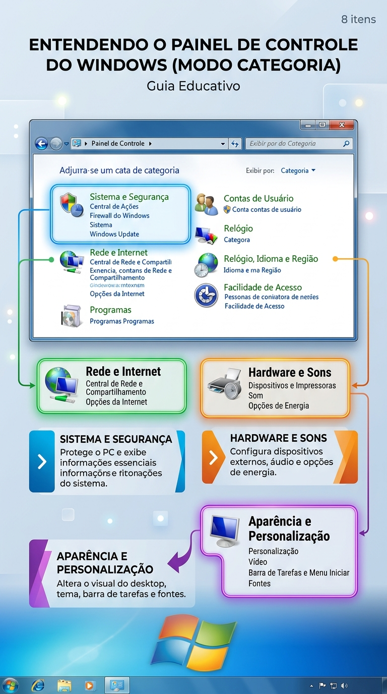
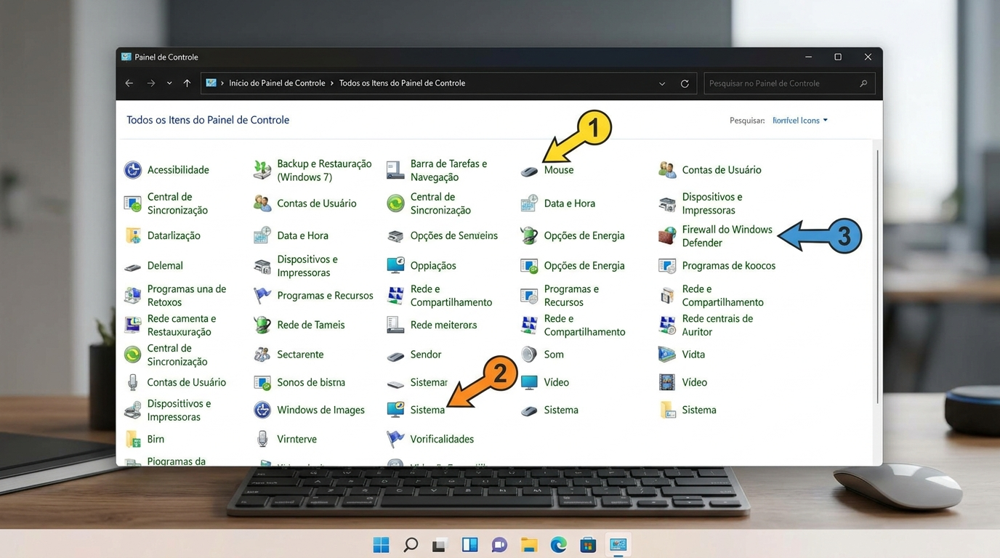
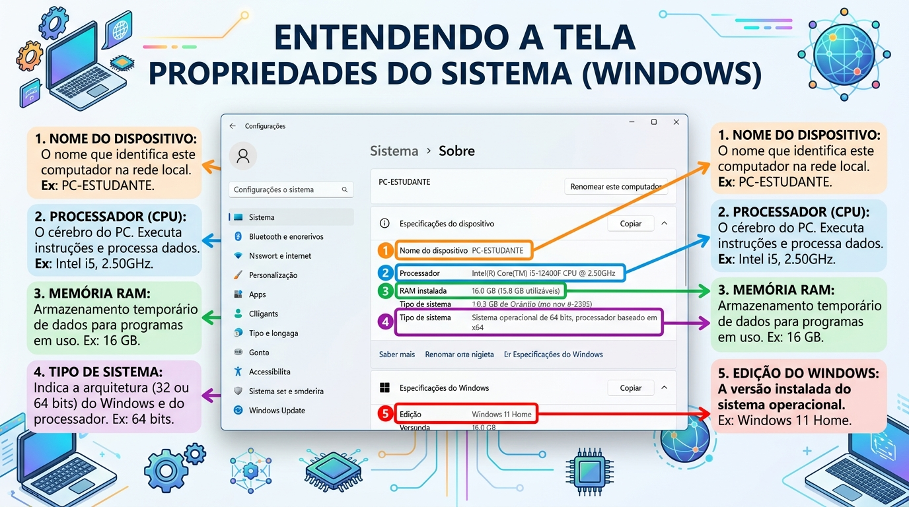
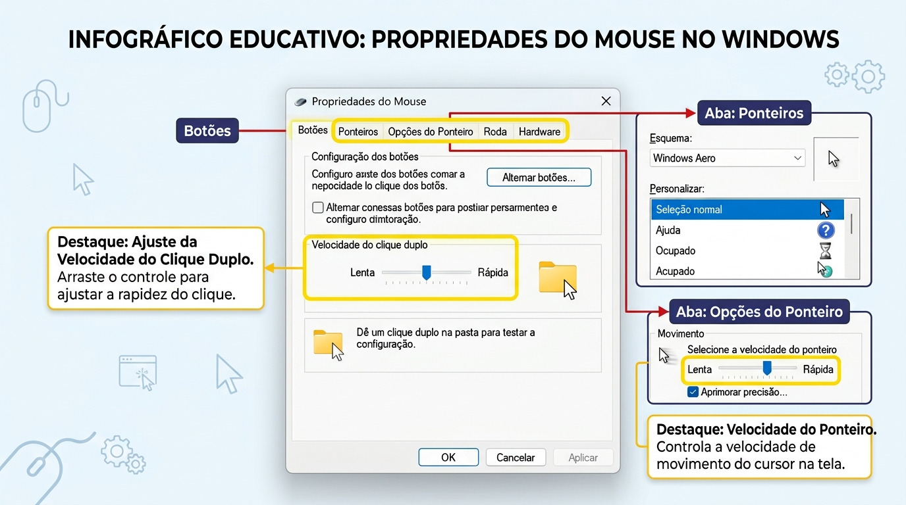
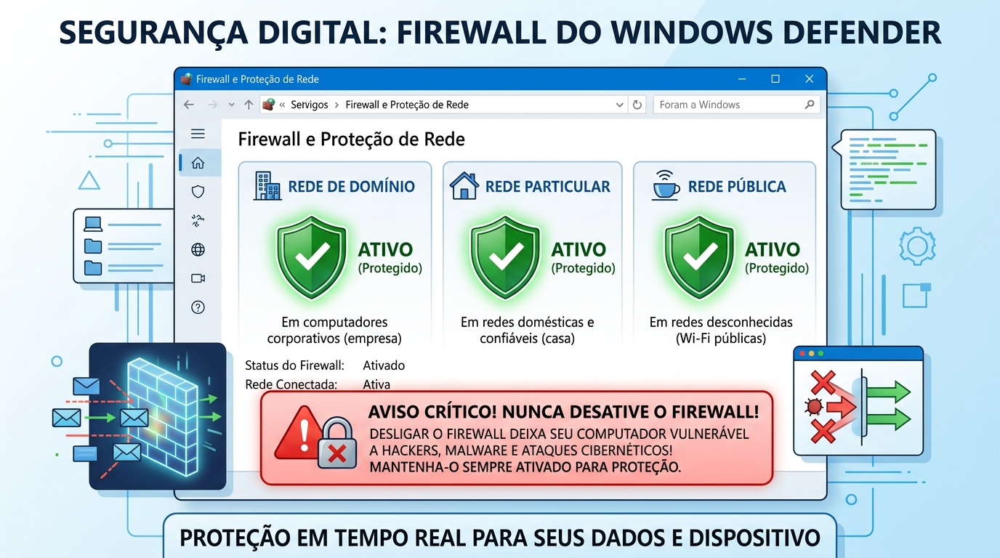
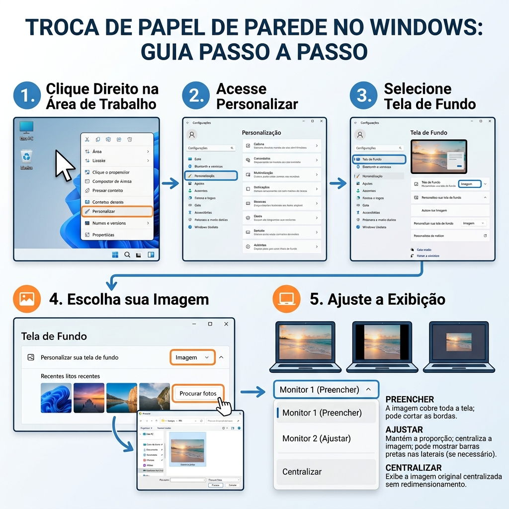

Encontro Extra
Configurações Essenciais
do Windows
Painel de Controle, equipamento, mouse, firewall e personalização

Categoria
Ajuda quem ainda não sabe o nome exato da ferramenta.
Ícones
Mostra todos os itens e facilita o acesso direto.
Configurações
No Windows 10/11, algumas opções também aparecem no aplicativo Configurações.
🔎 Caminho de investigação
🧭 Três caminhos desta aula
Hardware e Sons > Mouse
Sistema e Segurança > Firewall
Sistema e Segurança > Sistema
A mesma ferramenta pode aparecer por categoria ou diretamente na lista de ícones.

🧾 O que observar
| Windows | Edição e versão do sistema. |
| Processador | Modelo do processador instalado. |
| Memória RAM | Quantidade disponível no equipamento. |
| Tipo do sistema | Arquitetura de 64 ou 32 bits. |
| Nome do dispositivo | Identificação do computador na rede. |

🖱️ Abrir as propriedades
No Painel de Controle, escolha Hardware e Sons > Mouse. Também é possível pesquisar “mouse” no menu Iniciar.
Explore as abas Botões, Ponteiros e Opções do Ponteiro.
🎯 Ajustes mais úteis
Botões: trocar o botão principal e ajustar a velocidade do clique duplo.
Ponteiros: escolher tamanho e contraste.
Opções: velocidade, precisão e rastro do ponteiro.

🧱 O que é?
O firewall controla conexões de rede que entram e saem do computador. Ele ajuda a bloquear acessos não autorizados e permite comunicações conhecidas.
🌐 Perfis de rede
Uma rede privada costuma ser confiável, como a de casa. Uma rede pública exige mais cuidado, como Wi-Fi de aeroporto ou escola.
🔍 O que consultar
Abra Sistema e Segurança > Firewall do Windows Defender e verifique se ele está ativado para os perfis apresentados.
Aprenda a reconhecer o link Permitir um aplicativo pelo Firewall, mas não autorize nada sem orientação.
🚫 O que não fazer
Não desligue o firewall para “testar”, não permita qualquer aplicativo e não aceite avisos de segurança sem ler o nome do programa.


Preencher
Ocupa a tela, podendo cortar parte da imagem.
Ajustar
Mostra a imagem inteira, podendo deixar faixas laterais.
Centralizar
Mantém o tamanho original no centro da tela.
Painel de Controle
Abra o Painel de Controle, alterne entre Categoria e Ícones pequenos e localize Mouse, Sistema e Firewall.
Equipamento
Abra Propriedades e anote edição do Windows, memória RAM, processador e tipo do sistema.
Mouse
Ajuste o ponteiro, teste o clique duplo e retorne ao valor definido pelo professor.
Firewall
Consulte os perfis ativos e explique por que não se deve desligar o firewall. Não permita aplicativos.
Papel de parede
Escolha uma imagem fornecida pelo professor, aplique o ajuste adequado e depois restaure a imagem original.
Registro
Complete uma ficha com caminho, alteração feita, resultado e como desfazer cada configuração.
Resposta esperada: Propriedades/Sobre do equipamento.
Resposta esperada: Propriedades do Mouse, abas Botões e Opções do Ponteiro.
Resposta esperada: não permitir sem confirmar a origem; consultar o professor.
Resposta esperada: Personalização > Plano de fundo > Ajustar ou Centralizar.
- Consigo abrir o Painel de Controle por pesquisa e por Win + R.
- Sei alternar entre Categorias e Ícones.
- Consigo encontrar as propriedades do equipamento.
- Sei explicar o que são RAM, processador e tipo do sistema.
- Consigo ajustar velocidade e aparência do mouse.
- Sei verificar se o Firewall está ativo.
- Sei quando não devo permitir um aplicativo no Firewall.
- Consigo trocar o papel de parede e ajustar seu encaixe.
🔁 Antes de confirmar
Leia a tela, observe o que será alterado e anote a configuração original quando necessário.
🆘 Quando pedir ajuda
Ao aparecer uma senha de administrador, alerta de segurança, driver, erro desconhecido ou opção que você não consegue explicar.
✅ Competência desenvolvida
Usar o Windows com mais autonomia, identificando a ferramenta correta para cada configuração e mantendo o cuidado com segurança.
🧭 Painel de Controle
Localizar, ler e aplicar configurações.
🖥️ Equipamento
Consultar propriedades e identificar o computador.
🖱️ Mouse
Ajustar clique, ponteiro e velocidade.
🧱 Firewall
Entender proteção e evitar permissões indevidas.
🖼️ Papel de parede
Personalizar a Área de Trabalho com legibilidade.
🧪 Prática
Alterar, testar, registrar e restaurar.
📌 Orientação ao professor
Use os espaços reservados para capturas ou ilustrações das telas disponíveis no laboratório. Se a versão do Windows apresentar nomes diferentes, mostre o caminho equivalente e destaque a finalidade da ferramenta, não apenas o texto do botão.